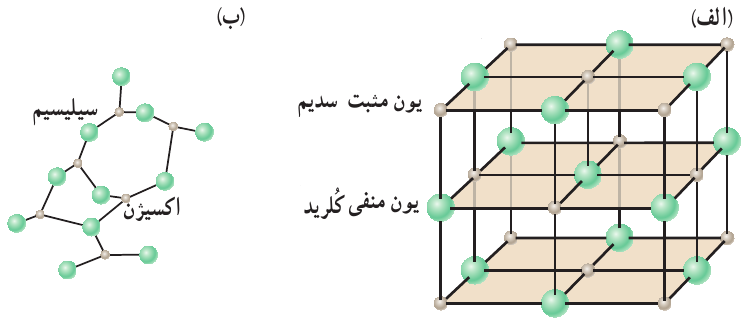

حالت ماده
نکته. ابعاد اتمها بین ۱ تا چند آنگستروم (\(Å = 10^{-10} m\)) است.
جامد
تعریف 18 ویژگیهای جسم جامد:
- حجم و شکل معینی
- فاصله ثابت با نیروی الکتریکی بین مولکولی
- مکان معین به همراه نوسانات بسیار کوچک

تعریف 19 انواع جامدات:
- جامد بلورین:
- فلزها، نمک ها، الماس، یخ و بیشتر مواد معدنی
- سرد سازی آهسته برای ایجاد ساختار با نظم
- آمورف یا بی شکل:
- شیشه
- سرد سازی سریع، ایجاد طرحی نامنظم و بی شکل.

مایع
تعریف 20 ویژگی مایعات:
- چینش نامنظم و نزدیک به یکدیگر
- به راحتی جاری میشود و به شکل ظرف خودش در میآید
- فاصله ذرات سازنده مایع و جامد تقریباً یکسان و در حدود یک آنگستروم است.
پدیده پخش در مایعها
تعریف 21 عامل پخش جوهر در آب به علت حرکت نامنظم و کاتورهای یک مولکول آب است.
آزمایشگاه مجازی پخش
گاز
تعریف 22 ویژگی گازها:
- شکل مشخصی ندارد.
- حرکت آزادانه مولکولها با تندی بسیار به اطراف و برخورد با دیوارهها.
- میانگین فاصله مولکولهای گاز در مقایسه با اندازه آنها، خیلی بیشتر (تقریبا ۳۵ آنگستروم) است
پلاسما
تعریف 23 گاز با دمای بالا به طوری که بعضی از اتمها و مولکولها بارهای منفی خود را از دست داده و به صورت یون در میآیند.
نانو
تعریف 24 علوم نانو، شاخه ای از علوم است که تغییر در ویژگی های فیزیکی مواد را در مقیاس نانو \((1-100 nm)\) بررسی میکند.
نکته. ویژگی های فیزیکی مواد از قبیل نقطه ذوب، رسانندگی الکتریکی و گرمایی، شفافیت، استحکام، رنگ و… اغلب میتواند به طور چشمگیری در مقیاس نانو تغییر کند.
مثال 43 کدام یک از موارد زیر در مورد جامدهای بیشکل (آمورف) صحیح است؟
- مجموعههای تکراری مشابه در وضعیت مولکولهای آن دیده نمیشود.
- فلزها از این نوع جامدها هستند.
- فاصلههای مولکولی در آنها خیلی بیشتر از جامدهای بلوری است.
- در اثر سرد کردن تدریجی مایعها به وجود میآیند.
نمایش پاسخ
گزینه ۱مثال 44 تراکم ناپذیری مایعات بیان کننده کدام واقعیت است؟
- فاصله بین اتمهای مایع همیشه مقداری ثابت است.
- بین اتمهای مایع همیشه دافعه برقرار میشود.
- اگر فاصلهی بین مولکولهای مایع کم شود نیروی دافعه بین مولکولها به وجود میآید.
- اتمهای مایع تشکیل شبکه بلوری دادهاند.
نمایش پاسخ
گزینه ۳مثال 45 پخش شدن بوی عطر در فضای اتاق کدام یک از موارد زیر را نشان میدهد؟
- حرکت آزادانه مولکولهای هوا به اطراف
- فاصلهها زیاد بین مولکولهای هوا
- پایین بودن گرمای نهان تبخیر عطر
- وجود جریان هوا در اثر پدیده همرفتی